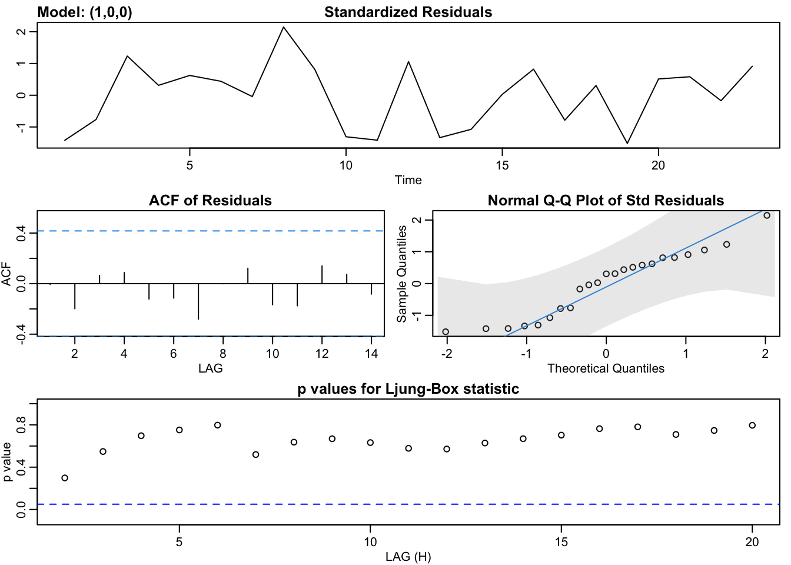

7.1 MREG with ARMA errors
library(ggplot2)
library(forecast)
library(astsa)
library(nlme)The stats::arima() and forecast::auto.arima() functions with argument xreg fit a multivariate linear regression with ARMA errors. Note, this is not what is termed a ARMAX model. ARMAX models will be addressed in Section 7.2.
The model fitted when xreg is passed in is:
where xreg is matrix with \(c_{t,1}\) in column 1, \(c_{t-2}\) in column 2, etc. \(z_t\) are the ARMA errors.
7.1.1 Example: fitting with auto.arima
Let’s fit two of the best multivariate regression models from Section 6.3.1 with ARMA errors. We can use auto.arima to search for an ARMA model for the residuals.
xreg <- as.matrix(df[,c("Year","FIP")])
forecast::auto.arima(df$anchovy, xreg=xreg)## Series: df$anchovy
## Regression with ARIMA(0,0,0) errors
##
## Coefficients:
## Year FIP
## 0.0730 1.0394
## s.e. 0.0046 0.0079
##
## sigma^2 estimated as 0.024: log likelihood=11.3
## AIC=-16.6 AICc=-15.34 BIC=-13.2The esimated model is a “Regression with ARIMA(0,0,0) errors” which indicates no autoregressive or moving average pattern in the residuals. We can also see this by looking at an ACF plot of the residuals.
lm(anchovy~Year+FIP,data=df) %>%
resid %>%
acfThe same pattern is seen with the models with more variables.
xreg <- as.matrix(df[,c("Year","Trachurus","FIP")])
forecast::auto.arima(df$anchovy, xreg=xreg)## Series: df$anchovy
## Regression with ARIMA(0,0,0) errors
##
## Coefficients:
## Year Trachurus FIP
## 0.0883 -0.2339 1.2686
## s.e. 0.0083 0.1092 0.1073
##
## sigma^2 estimated as 0.02101: log likelihood=13.39
## AIC=-18.78 AICc=-16.56 BIC=-14.247.1.2 Example: fitting with arima and sarima
If we want to fit a specific ARMA model, for example an AR(1) model for the residuals, we can use arima.
xreg <- as.matrix(df[,c("Year","FIP")])
arima(df$anchovy, xreg=xreg, order = c(1,0,0))##
## Call:
## arima(x = df$anchovy, order = c(1, 0, 0), xreg = xreg)
##
## Coefficients:
## ar1 intercept Year FIP
## -0.0404 -0.0975 0.0729 1.0517
## s.e. 0.2256 2.3540 0.0057 0.2920
##
## sigma^2 estimated as 0.02188: log likelihood = 11.32, aic = -12.64We can also use the sarima function in the astsa package. This plots a nice diagnostics plot with the fit.
xreg <- as.matrix(df[,c("Year","FIP")])
astsa::sarima(df$anchovy, 1, 0, 0, xreg=xreg)## initial value -1.932551
## iter 2 value -1.945583
## iter 3 value -1.946840
## iter 4 value -1.946961
## iter 5 value -1.946974
## iter 6 value -1.946976
## iter 7 value -1.946976
## iter 7 value -1.946976
## iter 7 value -1.946976
## final value -1.946976
## converged
## initial value -1.897686
## iter 2 value -1.910866
## iter 3 value -1.910989
## iter 4 value -1.911001
## iter 5 value -1.911004
## iter 5 value -1.911004
## iter 5 value -1.911004
## final value -1.911004
## converged
## $fit
##
## Call:
## stats::arima(x = xdata, order = c(p, d, q), seasonal = list(order = c(P, D,
## Q), period = S), xreg = xreg, transform.pars = trans, fixed = fixed, optim.control = list(trace = trc,
## REPORT = 1, reltol = tol))
##
## Coefficients:
## ar1 intercept Year FIP
## -0.0404 -0.0975 0.0729 1.0517
## s.e. 0.2256 2.3540 0.0057 0.2920
##
## sigma^2 estimated as 0.02188: log likelihood = 11.32, aic = -12.64
##
## $degrees_of_freedom
## [1] 19
##
## $ttable
## Estimate SE t.value p.value
## ar1 -0.0404 0.2256 -0.1791 0.8597
## intercept -0.0975 2.3540 -0.0414 0.9674
## Year 0.0729 0.0057 12.8250 0.0000
## FIP 1.0517 0.2920 3.6024 0.0019
##
## $AIC
## [1] -0.549349
##
## $AICc
## [1] -0.4527307
##
## $BIC
## [1] -0.30250257.1.3 Example: fitting with gls
We can also fit multivariate regression with autocorrelated errors with the nlme package and function gls(). The default fitting method is REML, and to get the same results as arima(), we need to specify method="ML".
mod <- gls(anchovy~Year+FIP, data=df, correlation=corAR1(form=~1), method="ML")
summary(mod)## Generalized least squares fit by maximum likelihood
## Model: anchovy ~ Year + FIP
## Data: df
## AIC BIC logLik
## -12.63503 -6.957558 11.31751
##
## Correlation Structure: AR(1)
## Formula: ~1
## Parameter estimate(s):
## Phi
## -0.04023925
##
## Coefficients:
## Value Std.Error t-value p-value
## (Intercept) -0.0970390 2.4776517 -0.039166 0.9691
## Year 0.0729497 0.0060939 11.971012 0.0000
## FIP 1.0516813 0.3070037 3.425630 0.0027
##
## Correlation:
## (Intr) Year
## Year -0.631
## FIP -1.000 0.612
##
## Standardized residuals:
## Min Q1 Med Q3 Max
## -1.5299235 -0.9188421 0.2607087 0.6691076 2.1482577
##
## Residual standard error: 0.1480464
## Degrees of freedom: 23 total; 20 residualYou can also fit an AR(2) or ARMA with gls():
mod <- gls(anchovy~Year+FIP, data=df, correlation=corARMA(form = ~1,p=2,q=0), method="ML")
summary(mod)## Generalized least squares fit by maximum likelihood
## Model: anchovy ~ Year + FIP
## Data: df
## AIC BIC logLik
## -12.033 -5.220033 12.0165
##
## Correlation Structure: ARMA(2,0)
## Formula: ~1
## Parameter estimate(s):
## Phi1 Phi2
## -0.09861143 -0.28248099
##
## Coefficients:
## Value Std.Error t-value p-value
## (Intercept) -1.1700795 2.0440075 -0.572444 0.5734
## Year 0.0732924 0.0048706 15.047960 0.0000
## FIP 1.1869743 0.2533707 4.684734 0.0001
##
## Correlation:
## (Intr) Year
## Year -0.662
## FIP -1.000 0.645
##
## Standardized residuals:
## Min Q1 Med Q3 Max
## -1.6245159 -0.9492037 0.1640458 0.6481195 2.1941017
##
## Residual standard error: 0.1494797
## Degrees of freedom: 23 total; 20 residual7.1.4 MREG of first or second differences
In the multivariate regression with ARMA errors, the response variable \(x_t\) is not necessarily stationary since the covariates \(c_t\)’s need not be stationary. If we wish to model the first or second differences of \(x_t\), then we are potentially modeling a stationary process if differencing leads to a stationary process. We need to think carefully about how we set up a multivariate regression if our response variable is stationary.
One recommendation is if \(x_t\) is differenced, the same differencing is applied to the covariates. The idea is if the response variable is stationary, we want to make sure that the independent variables are also stationary. However, in a fisheries application \(x_t - x_{t-1}\) often has a biological meaning, the yearly (or monthly or hourly) rate of change, and that rate of change is what one is trying explain with a covariate. One would not necessarily expect the first difference to be stationary and one is trying to explain any trend in the one-step rate of change with some set of covariates. On the other hand, if the response variable, the raw data or the first or second difference, is stationary then trying to explain its variability via a non-stationary covariate will clearly lead to the effect size of the covariates being zero. We don’t need to fit a model to tell us that.
7.1.5 Discussion
R provides many different functions and packages for fitting a multivariate regression with autoregressive errors. In the case of the anchovy time series, the errors are not autoregressive. In general, the first step to determining whether a model with correlated errors is required is to look at diagnostics for the residuals. Select a model (see previous section) and then examine the residuals for evidence of autocorrelation. However another approach is to include a model with autocorrelated errors in your model set and compare via model selection. If this latter approach is taken, you must be careful to that the model selection criteria (AIC, BIC etc) are comparable. If you use functions from different packages, they authors have often left off a constant in their model selection criteria formulas. If you need to use different packages, you will carefully test the model selection criteria from the same model with different functions and adjust for the missing constants.